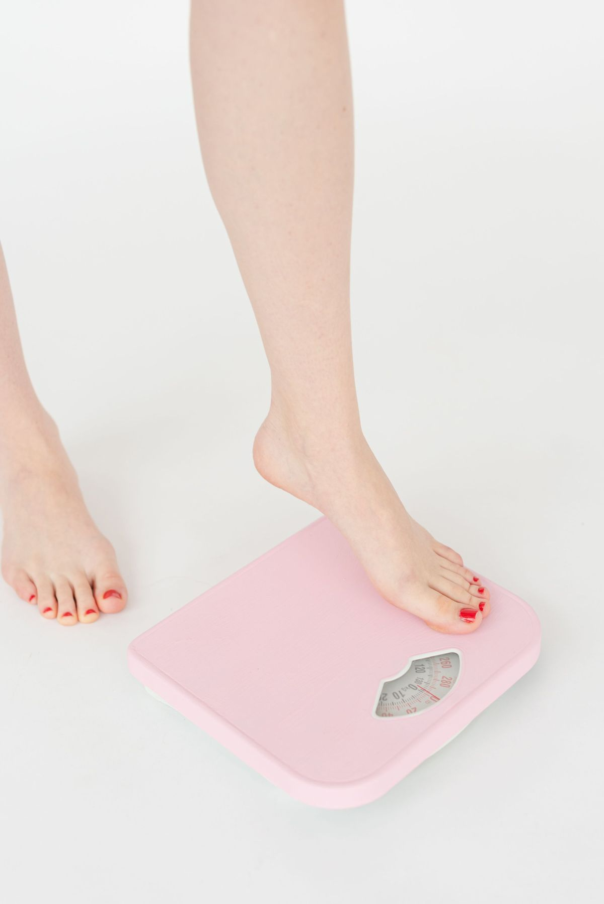
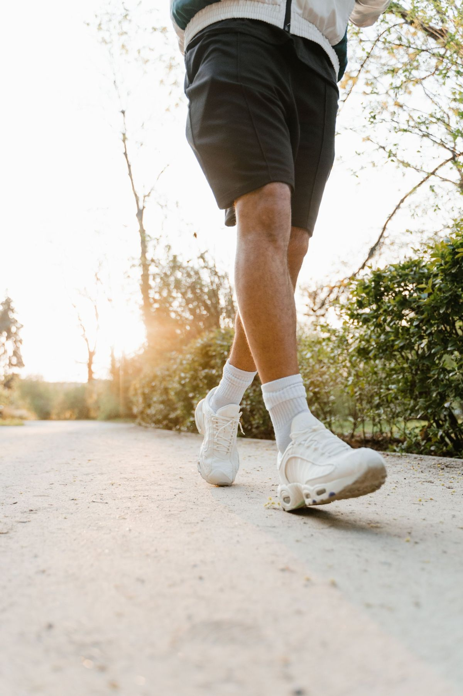
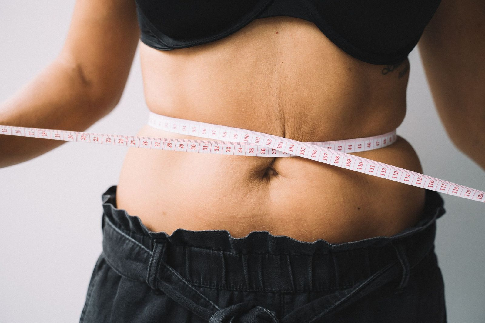

Afvallen zonder jojo-effect.
Elk crashdieet werkt, zes weken lang. Daarna komt het gewicht terug, vaak met rente. Niet omdat jij zwak bent, maar omdat de methode fout is. Zo doe je het wél duurzaam.

De korte versie: klein tekort, veel eiwit, blijven trainen
Afvallen draait om één ding: structureel iets minder energie binnenkrijgen dan je verbruikt. Maar hoe groot je dat tekort maakt, bepaalt of je vooral vet verliest of ook spier, en of je het volhoudt. De praktische richtlijn uit de sportwetenschap: een tekort van zo'n 300–500 kcal per dag, goed voor ongeveer 0,5–1% van je lichaamsgewicht per week. Langzamer dan je wilt, sneller dan je denkt.
Waarom crashdiëten altijd terugslaan
Een extreem tekort voelt daadkrachtig, maar sloopt precies wat je nodig hebt: je verliest naast vet ook spiermassa (waardoor je verbruik daalt), je honger neemt toe en je energie keldert. Zodra je "klaar" bent, val je terug op oude gewoontes met een lager verbruik dan voorheen, en het gewicht komt terug. De oplossing is saai maar bewezen: een tekort dat klein genoeg is om maandenlang vol te houden, met gewoontes die je daarna gewoon doorzet.
Zo pak je het aan
- Kies een klein tekort. Reken grof je onderhoud uit (of laat mij dat doen in de intake) en ga er 300–500 kcal onder zitten. Niet meer.
- Zet eiwit op één. Richting 1,8–2,2 g per kilo lichaamsgewicht: het beschermt je spiermassa en zit het best vol. Lees ook: hoeveel eiwit heb je nodig?
- Blijf krachttrainen. 2–3 keer per week geeft je lichaam de reden om spier te behouden en vet te verbranden, niet andersom.
- Meet het gemiddelde, niet de dag. Weeg jezelf een paar keer per week en kijk naar het weekgemiddelde. Daalt het 4 weken niet? Dan sturen we bij.

Vergeet de onzichtbare helft niet: slaap en stress bepalen mede je honger en je herstel. Wie structureel 6 uur slaapt, vecht tegen zichzelf, daarom hoort herstel in elk traject bij mij standaard in het plan.

Hoeveel kilo per week afvallen is gezond?
Reken op 0,5–1% van je lichaamsgewicht per week, bij 90 kilo is dat zo'n 0,5 tot 0,9 kilo. Sneller kan, maar vergroot de kans op spierverlies en terugval.
Moet ik koolhydraten schrappen?
Nee. Voor vetverlies telt het totale calorietekort; of je dat met minder koolhydraten of minder vet bereikt, is persoonlijke voorkeur. Kies wat jij volhoudt.
Waarom stagneert mijn gewicht ineens?
Korte plateaus zijn normaal (vocht, volle darmen, cyclus). Daalt je weekgemiddelde drie à vier weken niet, dan is je verbruik gedaald of je inname gestegen, tijd om het tekort opnieuw af te stellen.
Is cardio verplicht om af te vallen?
Nee, het tekort doet het werk. Cardio en meer dagelijkse beweging (wandelen!) maken het tekort wel makkelijker, en zijn goed voor je conditie en herstel.
Bronnen
Dit artikel is algemene informatie en geen persoonlijk voedings- of medisch advies. Vragen over jouw situatie? Plan een gratis intake.